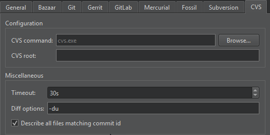

CVS
CVS is an open source version control system.
In addition to the standard version control system functions described in Use common VCS Functions, you can select Tools > CVS > Edit to set a file as writable, notify watchers that the file is being edited, and watch for actions performed on the file by other users.
To discard the changes that you made in a file, notify watchers that the file is no longer being edited, and set the file as read-only, select Unedit.
To unedit files in the local directory, as well as recursively in all subdirectories, select Unedit Repository.
CVS Preferences
To set CVS preferences, select Preferences > Version Control > CVS:

- CVS Command specifies the path to the command-line client executable.
- CVS root specifies the CVS root.
- Timeout sets a timeout for version control operations.
- Diff options sets preferences for viewing diff output.
- Describe all files matching commit id annotates all files that belong to the commit.
See also Set up version control systems, Use common VCS functions, and Version Control Systems.